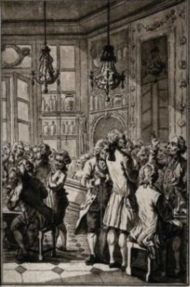

Middle Ages to Renaissance (11th-16th century)
Arab World:

Improving ice-making technology and using saltpeter and salt to cool things down promoted the popularization of frozen desserts.
Italy:
In the 16th century, Florentine architect Bernardo Buontalenti created cream-based ice cream (containing eggs and sugar) for the Medici family, laying the foundation for modern ice cream.
Back to the main page